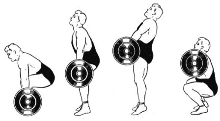

Кращі вправи в бодібілдингу, які я використовую
Кожному з нас, у тренажерному залі, хочеться прогресувати у робочій вазі, збільшуватися в об’ємах, в загальному росту, причому не просто, а як на дріжджах. Тому часом, коли явно візуального результату не спостерігається, нас починають відвідувати різні думки, типу: «а якого власне… я не росту?». Може щось не так з моєю програмою тренувань або ще щось? І ось на цьому етапі починається студіювання брошурок, серфінг у Інтернеті та інше різне в пошуках священного Грааля – таємничих вправ, що допомагають у справі накачування м’язів. Але якщо ви очікуєте знайти якісь секретні вправи чи поради, то вас буде чекати розчарування, оскільки такого просто не існує – просто потрібно старанно тренуватися і «ядро занять» побудувати на коронних вправах з важкої атлетики. Ось так то, виходить база бодібілдингу, стоїть на фундаменті важкої атлетики.
Спочатку звичайно може здатися, що дане твердження не достовірне, однак самі посудіть – в 50-60 роках і тренажерів то особливо не було, так може декілька силових рам, стійок, брусів, та й все мабуть. А от гарні і м’язисті тіла були зовсім не рідкістю. Потім вже звичайно почали придумувати різні конструкції тренажерів, блоків і їх подібних, і тому почали додавати в свою систему різні ізолюючі вправи для опрацювання дрібних м’язових груп. В основному ж кістяк або ядро вправ було незмінним і передавалося культуристами з покоління в покоління. Саме ці вправи (які будуть описані нижче) дозволяли атлетам минулих років успішно вибудовувати мускулисте тіло, нарощуючи силу і м’язову масу. Отже, давайте розберемо топ кращих вправ у бодібілдингу всіх часу і народів, які до нас «перекочували» з важкої атлетики.
- Станова тяга
- Присідання зі штангою
- Жим штанги лежачи на горизонтальній лаві
- Підйом штанги на груди
- (цією вправою я поки що не користуюся)
- Жим штанги стоячи в строгому стилі
- Нахили вперед зі штангою на спині
- (цією вправою я поки що не користуюся)
- Тяга штанги в нахилі
- Підтягування
- Віджимання на брусах
- (цією вправою я поки що не користуюся)
- Віджимання від підлоги
Вправа №1 Станова тяга
У бодібілдингу ще не придумали такої вправи, яка б задіяло настільки велику кількість м’язових груп. Судіть самі, це і біцепси стегон, сідниці, квадрицепси, повністю вся спина, шия, трапеції, тощо – загалом опрацювання всього тіла, з голови до п’ят. Це справді унікальна вправа, яка є точкою зосередження і мірилом сили атлета. Багато тренерів, не рекомендують виконувати дану вправу, бачте вона занадто травмонебезпечна і неприродна для людини. Так от, це не вірно, бо якщо розглянути біомеханіку руху, то станова тяга – це не що інше, як нахил і піднімання з підлоги людиною, предмета. Останнє ж цілком природно для будь якої людини.
Вправа №2 Присідання зі штангою
Базова вправа – присідання зі штангою, яку в 50-роках називали «королевою всіх масонаборних вправ». Ця вправа залучає до роботи великі м’язові групи і сприяє підвищеному нейроендокринному відгуку організму (тобто збільшується концентрація в крові анаболічних гормонів – тестостерон і соматотріпін).
____
__________________________________________________________________
Вправа №3 Жим штанги, лежачи на горизонтальній лаві
Остання, з базової трійки, краща вправа для нарощування та формування м’язової маси верхньої частини тіла. Правило тут одне – чим більша вага на штанзі, тим більше сукупне зусилля створюване мускулатурою. Детальніше про вправу: »«Жим штанги від грудей лежачи на горизонтальній лавці.
Вправа№4 Підйом штанги на груди
Вправа з класичної важкої атлетики. Навантажує все і відразу, так само, як і станова тяга. Характеризується розвитком «вибухової» сили у атлета і запросто може зробити з нього силову машину. Існують різні варіанти її виконання :
- з напіввису;
- з вису;
- з горизонтальної поверхні підлоги;
- тощо.

Вправа №5 Жим штанги стоячи в строгому стилі
Так ця вправа називалась у «золоті» 50 роки, нині ж вона знайома нам як «армійський жим». Якщо перекласти дослівно з англійської, то звучати вона буде, як «жим у стійці з армійською виправкою». І тут відразу можна вловити основний нюанс виконання вправи – не можна відхиляти торс від вертикалі. Якщо заглибитися в історію, то можна сказати, що ця вправа попередник жиму лежачи, адже саме вона було незмінною у визначенні сили, верхньої частини тіла спортсмена. Це відмінна вправа, яка досить потужно розвиває силу дельтовидних м’язів і трицепсів. До «винаходу» жиму лежачи входила у силову трійку змагальних вправ з важкої атлетики. На даний момент відомо кілька її варіацій: жим сидячи з грудей і за голови.
Вправа № 6. Нахили вперед зі штангою на спині.
Можна сказати, що ця вправа «канула в лету» , бо дуже рідко використовується у сучасному бодібілдингу. Раніше ж вона користувалося особливою популярністю в масонабірній програмі і приносила вражаючі результати у справі приросту м’язової маси спини, трапецій і шиї
Детальніше про вправу: «Нахили зі штангою на плечах» .
Вправа № 7. Тяга штанги в нахилі.
Не зазнала жодних трансформацій і дійшла до нас у первозданному вигляді. Направлена на опрацювання верху спини і розвиток найширших м’язів в товщину. Виконується в різних варіаціях. Детальніше про вправу: Тяга штанги до поясу в нахилі «.»
Вправа № 8. Підтягування.
Здавалося би підтягування банальна вправа, але ж яка корисна, бо створює дуже потужну, загально-стимулюючу дію на всю верхню частину тіла. У «золоті» 50 роки, цю вправу називали «присіданнями для верху». Вона комплексно опрацьовує весь м’язовий корсет від трапецій до м’язів преса. Незаперечною перевагою вправ з власною вагою тіла (плюс вагою обтяження), є більш сильна нейром’язова стимуляція, яка сприяє інтенсифікації процесів росту м’язової маси.
Вправа № 9. Віджимання на брусах.
Віджимання на брусах направлені на опрацювання м’язів плечового пояса і по праву займало тоді (та й зараз) друге місце за ступенем залучення в роботу м’язів верху тіла. Найбільше навантаження отримують трицепси, передні дельти і низ грудних.
Вправа № 10. Віджимання від підлоги.
Можна сказати, що ця вправа «перевернутий» аналог жиму лежачи. Вона залучає до роботи і опрацьовує практично ті ж м’язові групи, що і жим лежачи. Існує маса варіацій виконання віджимань від підлоги: різна постановка хвату рук (широка, вузька, на кулаках і т.п.), віджимання з стрибком і сам екзотичне з обтяженням, навіть у вигляді партнера на спині.
Ось власне і вся десятка кращих вправ у бодібілдингу. Що робити далі? Все дуже просто, берете 1-3 вправи і включаєте їх в кожен зі своїх тренувальних днів на тижні. Тренуємось, а результати записуємо у свій щоденник тренувань. Оскільки більшість відвідують тренажерний зал 3 рази на тиждень, то програма занять може виглядати наступним чином:
- Понеділок: станова тяга, підйом штанги на груди;
- Середа: Жим лежачи, підтягування;
- П’ятниця: Віджимання на брусах, віджимання від підлоги, тяга штанги у нахилі.
Включіть ці вправи в свою програму, освойте техніку їх виконання і тоді ваші об’єми не змусять на себе довго чекати!
Наверх^